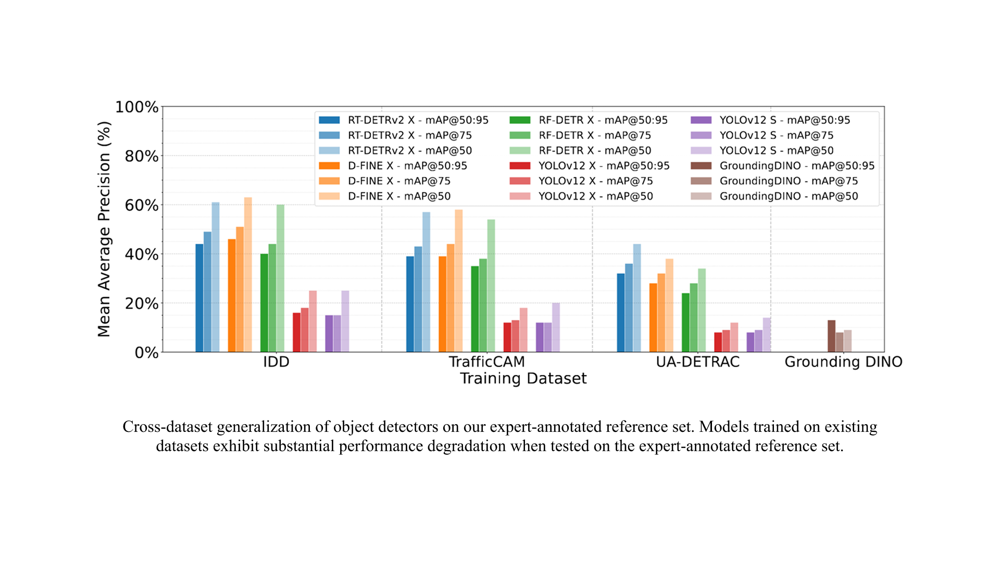
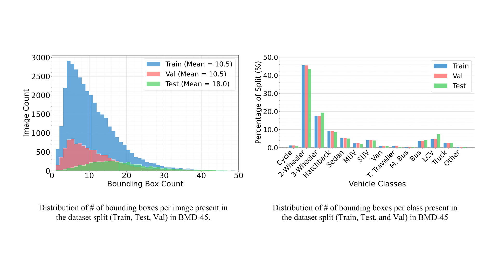
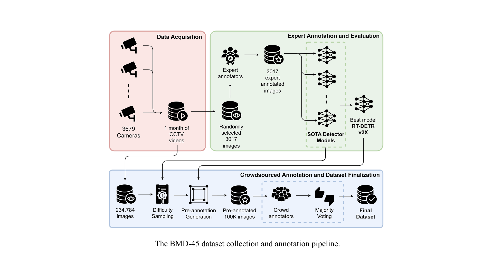
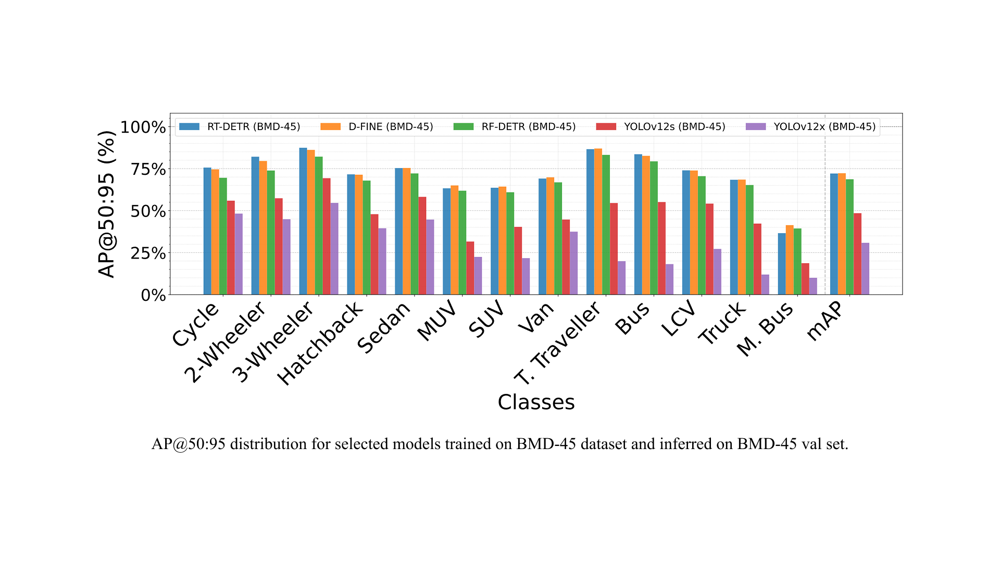

BMD-45: A Large-Scale CCTV Vehicle Detection Dataset for Urban Traffic in Developing Cities
A large-scale CCTV vehicle detection benchmark for dense urban traffic in developing cities.
AIM@IISc is anchored at CiSTUP and brings together faculty and researchers from CiSTUP, CDS, RBCCPS, and CDPG.
*Equal contributionAbstract
Robust vehicle detection from fixed CCTV cameras is critical for Intelligent Transportation Systems. Yet existing benchmarks predominantly feature relatively homogeneous, highly organized traffic patterns captured from ego-centric driving perspectives or controlled aerial views. This regional and sensor view bias creates a significant gap. Models trained on datasets such as UA-DETRAC and COCO struggle to generalize to the dense, heterogeneous, disorganized traffic conditions observed in rapidly developing urban centers in emerging economies. To address this limitation, we introduce BMD-45, a large-scale dataset comprising 480K bounding boxes annotated over 45K images captured from over 3.6K operational Safe City CCTV cameras. BMD-45 contains 14 fine-grained vehicle categories, including region-specific modes such as auto-rickshaws and tempo travellers, which are not present in existing benchmarks. The dataset captures real-world deployment challenges, including extreme viewpoint variation, occlusion, and vehicle density. We establish comprehensive baselines using state-of-the-art detectors and reveal a striking domain gap: models fine-tuned on UA-DETRAC achieve only 33.6% mAP@0.50:0.95, compared to 83.8% when trained in-domain on BMD-45, representing a 2.5× improvement that persists even when accounting for novel vehicle classes. This performance gap underscores the critical need for geographically diverse traffic benchmarks and establishes BMD-45 as a baseline for developing robust perception systems in underrepresented urban environments worldwide. The dataset is available at Hugging Face.
Why BMD-45
Scale Built for Modern Detectors
BMD-45 offers 45K images and 480K accepted annotations, making it one of the largest publicly released CCTV-view vehicle detection datasets for dense urban traffic.
Fine-Grained Regional Taxonomy
The dataset includes 14 vehicle categories, covering region-specific classes such as auto-rickshaws and tempo travellers that are missing from common benchmarks.
Real CCTV Deployment Conditions
Scenes span extreme viewpoint variation, heavy occlusion, and dense traffic from over 3.6K operational Safe City cameras, reflecting real deployment challenges.
Dataset Release
Highlights

Cross-dataset evaluation highlights the sharp domain gap between common benchmarks and dense CCTV traffic in BMD-45.

The taxonomy covers 14 fine-grained classes, including region-specific vehicle types that are often absent from existing datasets.

A multi-stage curation and annotation workflow emphasizes spatial diversity, difficult scenes, and annotation quality.

Strong in-domain baselines establish BMD-45 as a practical benchmark for training and evaluating CCTV-view perception systems.
BibTeX
to be updated